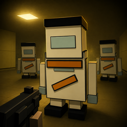

ENTERING THE BACKROOMS
BOXHEAD
격리 구역을 확인하는 중...
BACKROOM LOW · v1.2.0
LOW-POLY SURVIVAL FPS
BOXHEADBACKROOM CO-OP
살아남고, 목표를 달성하고, 다음 구역으로.
혼자 도전하거나 친구와 함께 10가지 레벨 작전을 돌파하세요.
같은 서버에 연결 → 방 만들기·입장 → 두 사람 준비 → 호스트 시작
연결 대기같은 서버 주소로 접속한 뒤 친구를 초대하세요.
ROOM — — — — — —
방을 만든 뒤 친구에게 코드를 알려주세요.
처음 연결하나요? 연결 방법 보기
같은 Wi-Fi / LAN
한 PC에서 START_ONLINE.bat 실행 → 표시되는 LAN 주소를 두 기기에서 열기 → 방 생성·입장. Mac/Linux는 START_ONLINE.sh를 사용하세요.
서로 다른 장소
공개 서버가 필요합니다. 압축본의 온라인_연결방법.md에 배포 순서를 넣었습니다. 배포 후 두 사람이 같은 HTTPS 게임 주소를 여세요.
게임 파일만 열면 싱글 플레이가 됩니다. 방 코드는 같은 서버 안에서만 통합니다. LAN 주소는 같은 네트워크 전용입니다.
맵·난이도·그래픽 상세 설정
PC 성능 확인 중
자동 감지는 CPU·메모리·화면 크기를 보고 적절한 품질을 선택한다.
맵 미리보기노란 삼각형: 시작 위치 · 붉은 점: 적 스폰 · 벽: 내부 구조
레벨별 목표 보기
10레벨마다 탈출 기회가 열립니다. 다음 구역은 목표량과 적 구성이 강화됩니다. 추가 목표는 점수 보너스이며 실패해도 진행할 수 있습니다.
조작
WASD 이동 · Space 점프 · 마우스 시점 · 좌클릭 발사 · 우클릭 정조준 · 마우스 휠/1~9 무기 · R 재장전 · E 회복키트 · Shift 달리기 · F 목표 상호작용 · ESC 설정
RUN ENDED
게임 오버
WAVE REWARD
Wave Clear
보상 하나를 선택하면 다음 웨이브 준비 시간이 시작된다.
LEVEL 1 · 구역 확보
Wave 1
0 left
HEADSHOT
LOW HP
목표
위로 밀면 자동 달리기
KEYBOARD & MOUSE
키보드·마우스 설정
변경할 항목을 누른 뒤 원하는 키 또는 마우스 버튼을 입력하세요. 같은 키를 지정하면 두 항목의 키가 서로 교환됩니다.
변경할 조작을 선택하세요.
터치키 배치 편집
원하는 버튼을 끌어서 이동하세요.
↻
휴대폰을 가로로 돌려주세요
게임은 모바일 가로 화면에 맞춰 실행됩니다.
연결 복구 중
현재 진행을 보관하고 있습니다.